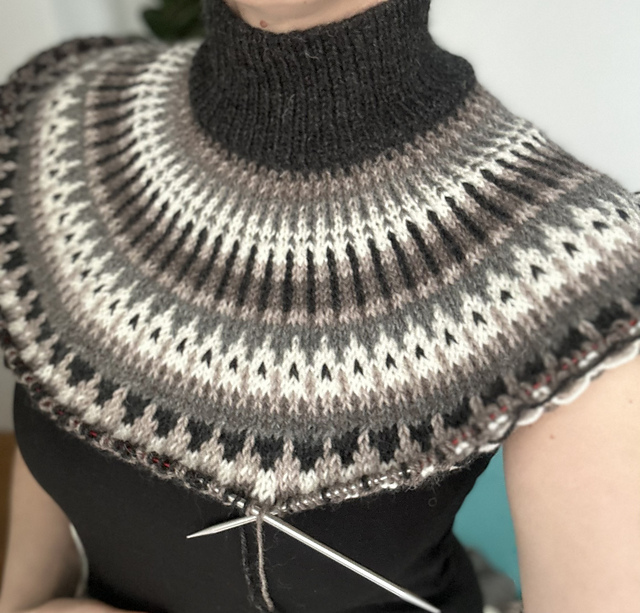

I’ve been eyeing this sweater pattern for months now, but I’m struggling to decide on the color combinations because there are just so many options! I want to make sure I choose colors that work well together and really bring the design to life. I’ve attached some examples below to help illustrate my dilemma.
I’ve decided to go with a dark main color for the sweater to create a more striking look, while opting for tonal shades to enhance its versatility. This approach will not only make the design stand out but also ensure it’s timeless
